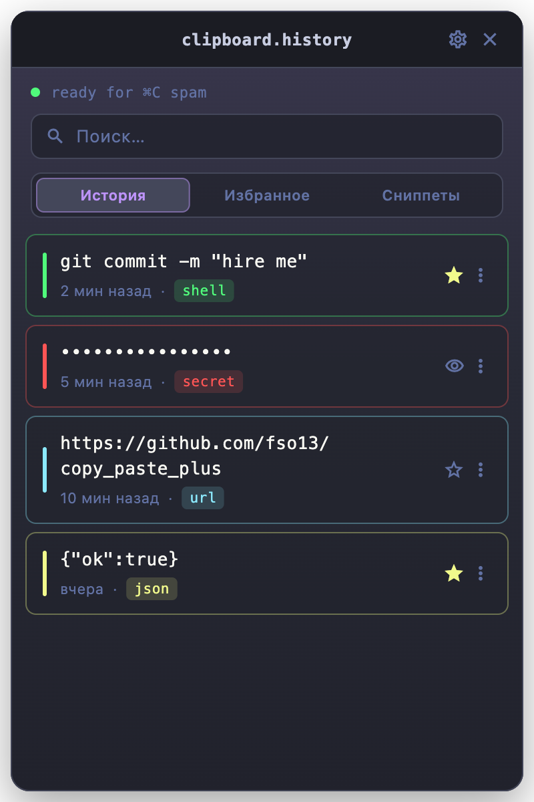
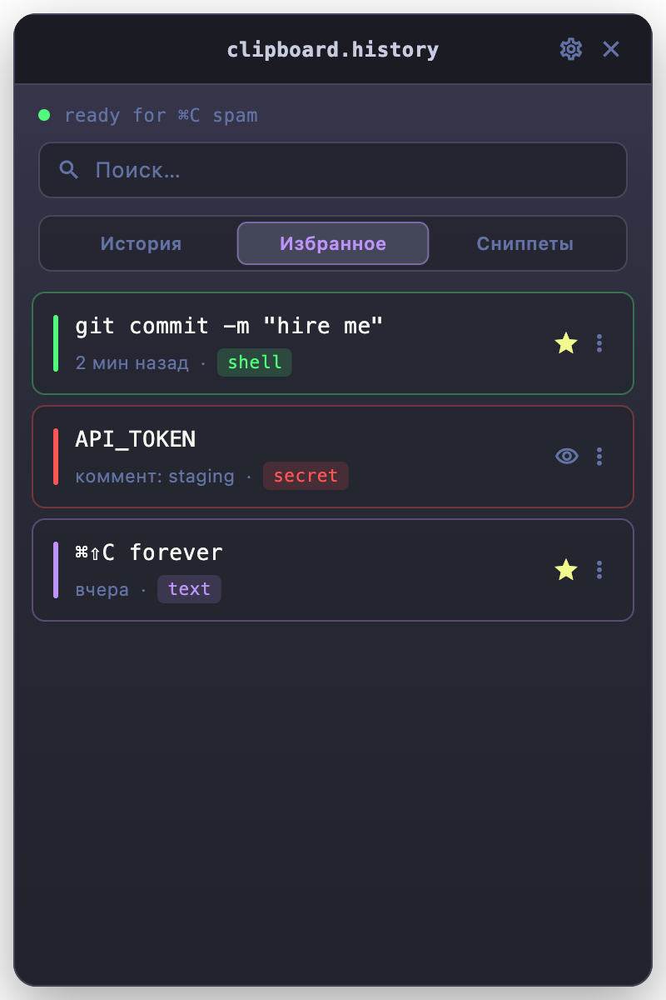
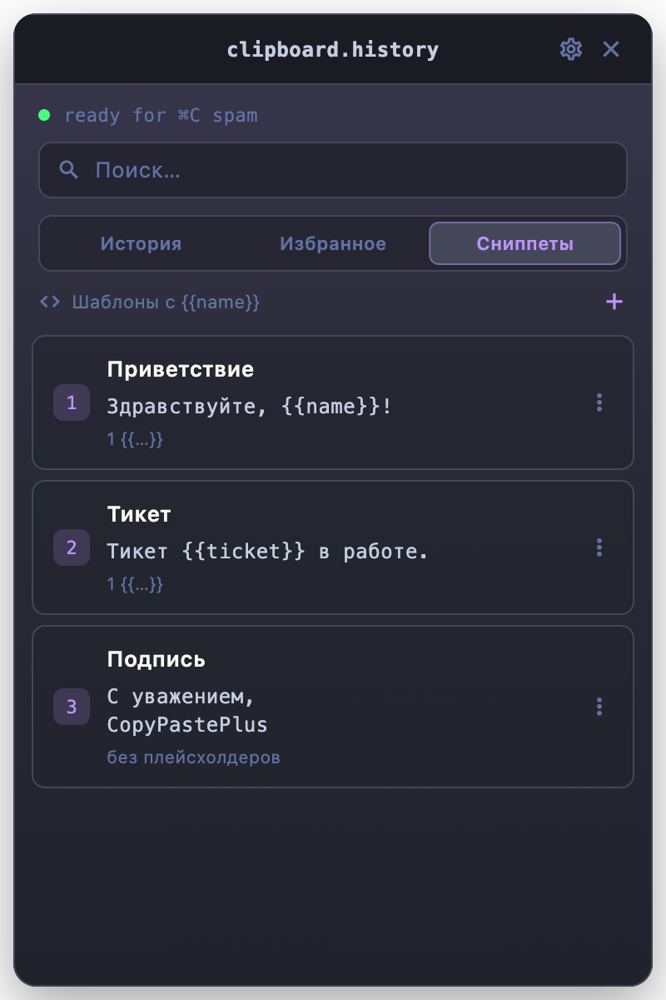
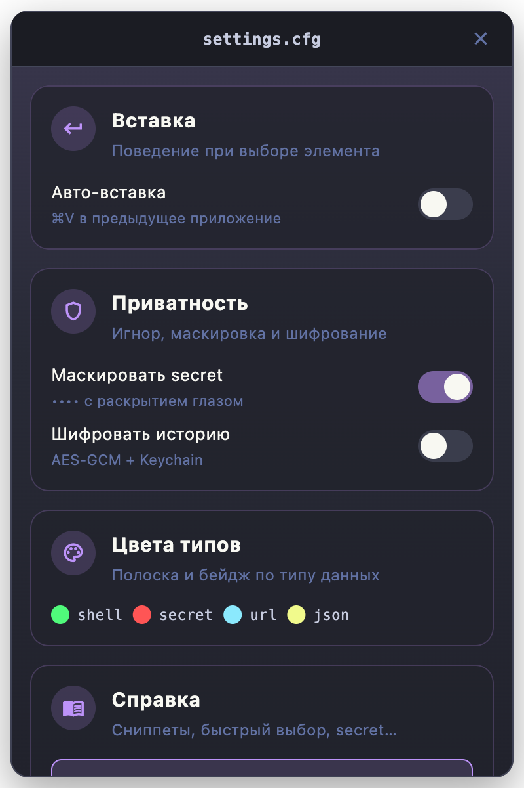
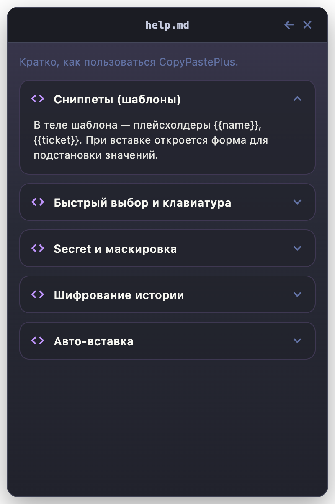

Clipboard manager · macOS
CopyPastePlus
История копирований, избранное, сниппеты, авто-вставка и secret — быстрый буфер обмена прямо из меню-бара.
watching pasteboard…
Features
Возможности
Всё нужное для ежедневной работы с буфером — без лишнего шума.
-
История копирований
Каждый копируемый фрагмент попадает в список. Быстрый поиск и вкладки «История» / «Избранное».
-
Сохранение стилей
Подсветка из IDE сохраняется при вставке в Word и другие rich-text приложения. В plain-text поля уходит только текст.
-
Избранное с заметками
Закрепляйте нужные фрагменты и добавляйте произвольный комментарий — он отображается под контентом.
-
Сниппеты и трансформации
Шаблоны с плейсхолдерами, преобразования JSON/Base64/slug и картинки в истории. Опциональное шифрование на диске.
-
Авто-вставка и клавиатура
Опциональная вставка в предыдущее приложение, навигация стрелками и быстрый выбор цифрами 1–9. Автозапуск через Login Items.
-
Приватность
Игнор приложений (парольные менеджеры по умолчанию), маскировка secret и ручная смена типа в меню элемента. Комментарий остаётся видимым.
-
Цвета типов
Полоска и бейдж для text / url / json / shell / secret и др. — цвета настраиваются в настройках (палитра или HEX).
-
Справка в приложении
Разделы про сниппеты, быстрый выбор 1–9, secret, шифрование и авто-вставку — прямо в настройках, плюс ссылка на сайт.
-
Меню-бар и ⌘⇧C
Глобальный хоткей, иконка в меню-баре, темы system / light / Dracula-inspired dark и проверка обновлений через GitHub Releases.
Product
Как выглядит
История, избранное, сниппеты, настройки и встроенная справка — в том же визуальном языке, что и сайт.





Install
Установка
-
01
Скачайте DMG
Возьмите сборку из Releases.
-
02
Перетащите в Applications
Откройте образ и положите CopyPastePlus в папку «Программы».
-
03
Разрешите доступ
При первом запуске macOS может попросить доступ в «Системные настройки → Конфиденциальность». Для авто-вставки включите Универсальный доступ.
Tech stack
Стек
Нативный macOS-клиент на Flutter с доступом к NSPasteboard.
- UIFlutter · Dart 3.12
- Desktopwindow_manager · system_tray
- Inputhotkey_manager
- Storageshared_preferences
- NativeSwift · NSPasteboard
- UpdatesGitHub Releases API
- CIGitHub Actions · DMG
- LicenseMIT
Shortcuts
Быстрые действия
- Показать / скрыть⌘⇧C или иконка в меню-баре
- Вставить из историиКлик / Enter / 1–9
- Навигация↑ / ↓
- В избранное★
- Сниппетвкладка «Сниппеты»
- Тип secret⋮ → сделать secret
- СправкаНастройки → Справка
- Цвета типовНастройки → Цвета типов
- Меню элемента⋮
- Фокус поиска⌘F
Загрузка…